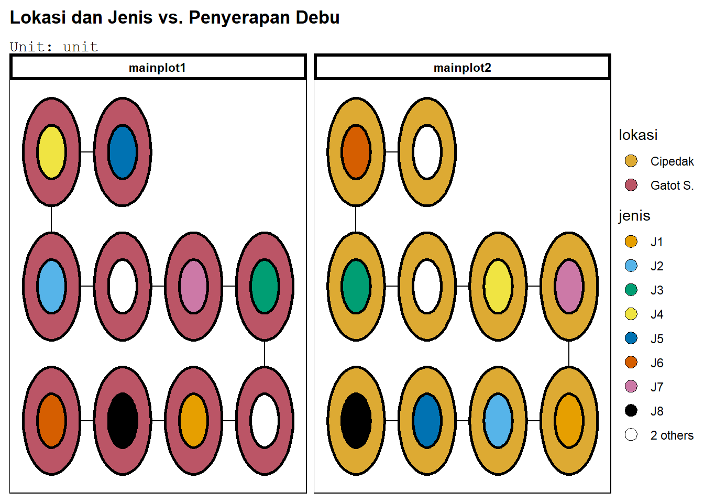
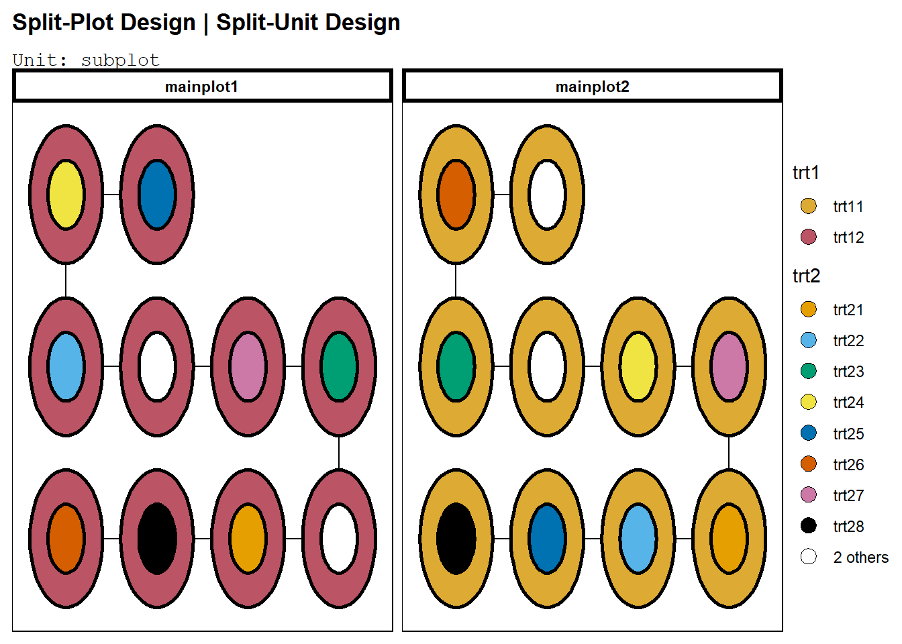
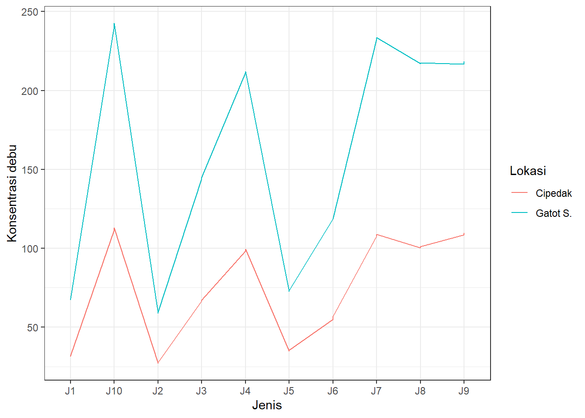
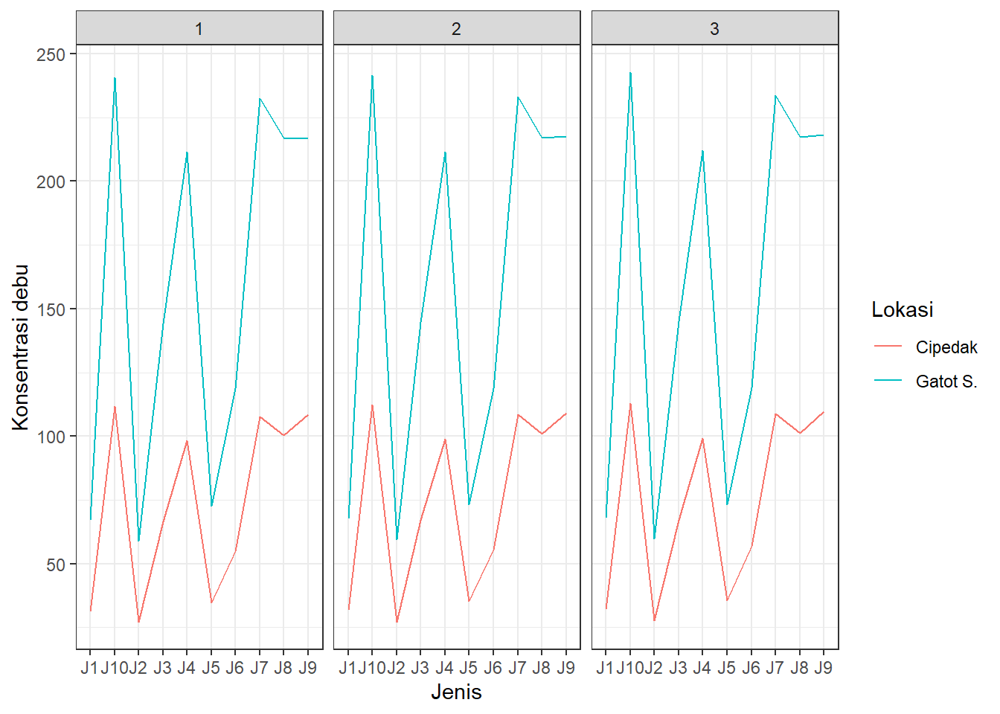
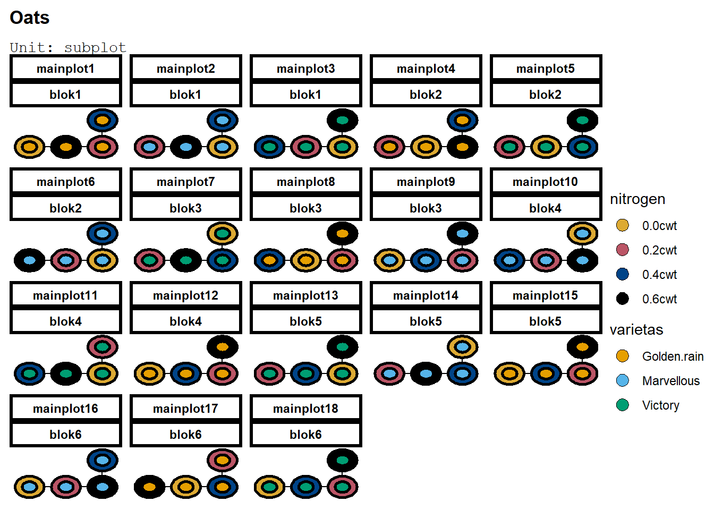
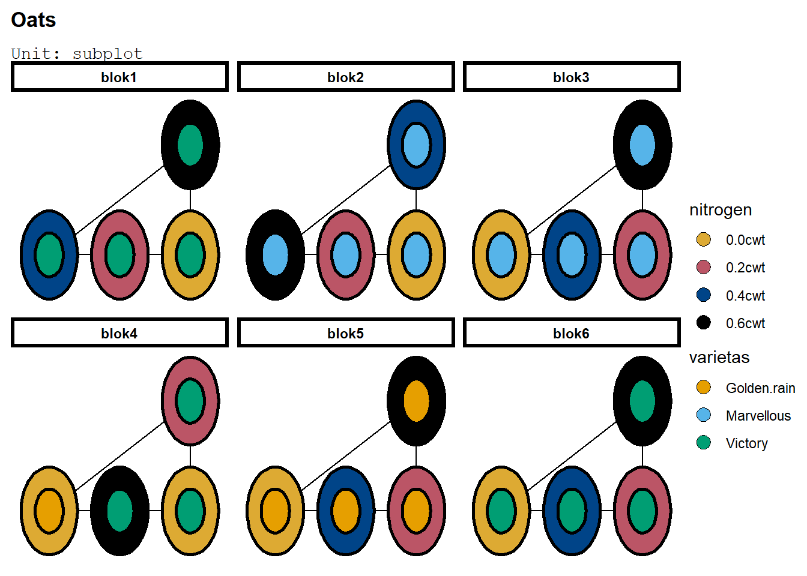
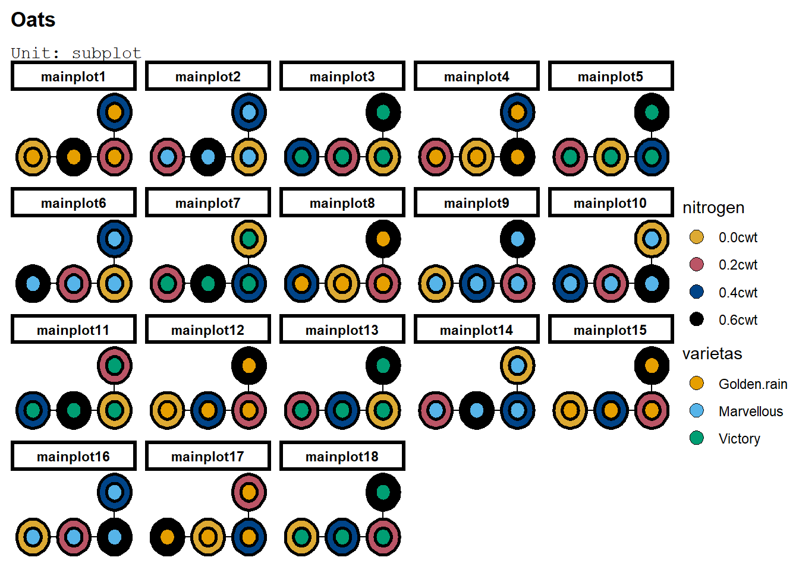

Code
Lokasi<-c("Cipedak","Gatot S.")
Jenis<-paste("J",seq(10),sep="")Dalam percobaan dua faktor, kombinasi perlakuan belum tentu diacak secara sempurna terhadap unit percobaan. Pengacakan sempurna berarti semua kombinasi perlakuan dibuat dan diacak pada semua unit percobaan (atau pada suatu blok di Split Plot RAKL). Dalam suatu rancangan split plot, pengacakan dilakukan bertahap. Petak utama diacak terlebih dahulu, lalu faktor yang ditempatkan sebagai anak petak diacak di tiap petak utama. Rancangan ini dipilih karena beberapa alasan:
Pengacakan pada rancangan petak terpisah di R dapat langsung dilakukan menggunakan fungsi design.split dari library agricolae. Akan digunakan studi kasus berikut:
Dalam usaha menjaga kesehatan lingkungan dilakukan percobaan dengan menggunakan berbagai jenis tanaman untuk menyerap debu di udara. Jenis tanaman yang digunakan antara lain tanaman berdaun kecil licin (J1 dan J2), berdaun kecil kasar (J3, J4), berdaun lebar licin (J5, J6), berdaun lebar kasar (J7, J8), dan berdaun jarum (J9, J10). Percobaan ini dicobakan pada dua lokasi (Cipedak dan Gatot Subroto). Setiap perlakuan diulang 3 kali dan unit-unit percobaan yang digunakan diasumsikan homogen. Dari percobaan ini ingin diketahui jenis tanaman yang mampu menyerap debu paling efektif dan di lokasi mana? Peubah respons yang dicatat dari percobaan ini adalah konsentrasi debu (ppm) yang melekat pada daun tanaman.
Untuk melakukan pengacakan, bangkitkan taraf kedua faktor terlebih dahulu:
Lokasi<-c("Cipedak","Gatot S.")
Jenis<-paste("J",seq(10),sep="")Pengacakan secara cepat dapat dilakukan dengan menggunakan design.split dari library agricolae. Pastikan design berupa CRD (completely randomized design) jika menggunakan split plot RAL. Argumen fungsi diurutkan sebagai berikut karena lokasi merupakan petak utama, jenis anak petak, dan ada tiga ulangan.
library(agricolae)
bagan<-design.split(Lokasi , Jenis,r=3, design="crd",serie = 0,
seed = 0, kinds = "Super-Duper", first=TRUE,randomization=TRUE)$book #(utama, anak, ulangan)
knitr::kable(head(bagan),n=10)| plots | splots | r | Lokasi | Jenis |
|---|---|---|---|---|
| 1 | 1 | 1 | Gatot S. | J8 |
| 1 | 2 | 1 | Gatot S. | J9 |
| 1 | 3 | 1 | Gatot S. | J2 |
| 1 | 4 | 1 | Gatot S. | J3 |
| 1 | 5 | 1 | Gatot S. | J7 |
| 1 | 6 | 1 | Gatot S. | J4 |
nrow(bagan)[1] 60Bagan memiliki 60 baris, yang masuk akal karena \(A\times B\times r=2\times 10\times 3=60\), di mana faktor A adalah lokasi, B adalah jenis, dan r ulangan. Jika ingin lebih detail, dapat diperhatikan bahwa pengacakan split plot dapat dilakukan sebagai berikut:
Implementasi di agricolae sebagai berikut:
bagan1<-design.crd(Lokasi,r=3,serie=0)
knitr::kable(bagan1$book)| plots | r | Lokasi |
|---|---|---|
| 1 | 1 | Cipedak |
| 2 | 2 | Cipedak |
| 3 | 3 | Cipedak |
| 4 | 1 | Gatot S. |
| 5 | 2 | Gatot S. |
| 6 | 3 | Gatot S. |
Lalu, fase kedua dari pengacakan. Ada \(2\times 3=6\) blok:
bagan2<-design.rcbd(Jenis,r=6)
knitr::kable(head(bagan2$book),n=10)| plots | block | Jenis |
|---|---|---|
| 101 | 1 | J4 |
| 102 | 1 | J1 |
| 103 | 1 | J6 |
| 104 | 1 | J10 |
| 105 | 1 | J5 |
| 106 | 1 | J9 |
nrow(bagan2$book)[1] 60Lakukan merge. Note bahwa tiap plot di pengacakan pertama akan menjadi blok, sehingga merge di x menggunakan plot dan di y menggunakan blok:
baganfin<-merge(bagan1$book,bagan2$book,by.x="plots",by.y="block")
knitr::kable(head(baganfin),n=10)| plots | r | Lokasi | plots.y | Jenis |
|---|---|---|---|---|
| 1 | 1 | Cipedak | 101 | J4 |
| 1 | 1 | Cipedak | 102 | J1 |
| 1 | 1 | Cipedak | 103 | J6 |
| 1 | 1 | Cipedak | 104 | J10 |
| 1 | 1 | Cipedak | 105 | J5 |
| 1 | 1 | Cipedak | 106 | J9 |
nrow(baganfin)[1] 60Sehingga terbuat bagan final. Bagan tersebut dapat dilihat dengan beberapa format lain, seperti:
bag2<-bagan[,-c(1,2)]
knitr::kables(list(
knitr::kable(reshape2::dcast(bag2,Lokasi~Jenis)), #lokasi vs jenis (berapa jenis tertentu di lokasi tertentu)
knitr::kable(reshape2::dcast(bag2,Lokasi+r~Jenis)) #lokasi, ulangan vs jenis (bagan, tapi tabulasi format wide)
),
caption="Dua cara menunjukkan bagan percobaan"
)
|
|
Hal tersebut dapat juga dilakukan dengan alternatif pengacakan dua fase:
knitr::kable(cbind(bagan1$book,bagan2$sketch))| plots | r | Lokasi | 1 | 2 | 3 | 4 | 5 | 6 | 7 | 8 | 9 | 10 |
|---|---|---|---|---|---|---|---|---|---|---|---|---|
| 1 | 1 | Cipedak | J4 | J1 | J6 | J10 | J5 | J9 | J2 | J7 | J8 | J3 |
| 2 | 2 | Cipedak | J4 | J3 | J7 | J8 | J6 | J5 | J9 | J10 | J1 | J2 |
| 3 | 3 | Cipedak | J3 | J1 | J2 | J4 | J5 | J7 | J8 | J9 | J6 | J10 |
| 4 | 1 | Gatot S. | J6 | J7 | J8 | J3 | J9 | J2 | J10 | J4 | J1 | J5 |
| 5 | 2 | Gatot S. | J1 | J10 | J9 | J6 | J4 | J2 | J7 | J3 | J5 | J8 |
| 6 | 3 | Gatot S. | J10 | J7 | J4 | J6 | J2 | J3 | J9 | J5 | J1 | J8 |
Untuk split plot RAL, dapat dibuat dua unit di set_units(). Pertama adalah petak utama, dan anak petak berupa unit yang nested_in() petak utama. Taraf lokasi diacak ke petak utama (lokasi~mainplot), dan jenis ke anak petak (jenis~unit):
library(edibble)
desSPRAL<-design(name="Lokasi dan Jenis vs. Penyerapan Debu") %>%
set_units(mainplot=2,
unit=nested_in(mainplot, 10)) %>%
set_trts(lokasi=Lokasi,
jenis=Jenis) %>%
allot_trts(lokasi~mainplot,
jenis~unit) %>%
assign_trts("random", seed=420) %>% serve_table
knitr::kable(head(desSPRAL,n=10))| mainplot | unit | lokasi | jenis |
|---|---|---|---|
| mainplot1 | unit1 | Gatot S. | J6 |
| mainplot1 | unit2 | Gatot S. | J8 |
| mainplot1 | unit3 | Gatot S. | J1 |
| mainplot1 | unit4 | Gatot S. | J10 |
| mainplot1 | unit5 | Gatot S. | J3 |
| mainplot1 | unit6 | Gatot S. | J7 |
| mainplot1 | unit7 | Gatot S. | J9 |
| mainplot1 | unit8 | Gatot S. | J2 |
| mainplot1 | unit9 | Gatot S. | J4 |
| mainplot1 | unit10 | Gatot S. | J5 |
Plot dari rancangan tersebut dapat dilihat:
deggust::autoplot(desSPRAL)
Edibble juga dapat membuat rancangan split plot secara default:
spd<-takeout(menu_split(t1 = 2, t2 = 10, r = 1, seed=420))
examine_recipe(spd)design("Split-Plot Design | Split-Unit Design") %>%
set_units(mainplot = 2,
subplot = nested_in(mainplot, 10)) %>%
set_trts(trt1 = 2,
trt2 = 10) %>%
allot_trts(trt1 ~ mainplot,
trt2 ~ subplot) %>%
assign_trts("random", seed = 420) %>%
serve_table()Dapat dilihat bahwa cara pembuatan rancangan sama dengan yang dibuat sebelumnya. Plot juga sama:
deggust::autoplot(spd)
Model linear aditif bagi split plot RAL adalah:
\[ y_{ijk} = \mu + \alpha_i + \delta_{k(i)} + \beta_j + (\alpha\beta)_{ij} + \epsilon_{ijk} \]
Dengan:
Dan hipotesis pengaruh petak utama:
\[ \begin{aligned} H_{0}&:\alpha_{1}=\ldots=\alpha_{a}=0\\ &\text{ faktor A tidak berpengaruh pada respon}\\ H_{1}&: \text{Paling sedikit ada satu i di mana }\alpha_{i}\neq 0\\ \\ \end{aligned} \]
Anak petak:
\[ \begin{aligned} H_{0}&:\beta_{1}=\ldots=\beta_{b}=0\\ &\text{ faktor B tidak berpengaruh pada respon}\\ H_{1}&: \text{Paling sedikit ada satu j di mana }\beta_{j}\neq 0\\ \end{aligned} \]
Dan interaksi:
\[ \begin{aligned} H_{0}&:(\alpha\beta)_{11}=(\alpha\beta)_{12}=\ldots=(\alpha\beta)_{ab}=0\\ &\text{ interaksi tidak berpengaruh pada respon}\\ H_{1}&: \text{Paling sedikit ada sepasang ij di mana }(\alpha\beta)_{ij}\neq 0\\ \end{aligned} \]
Dan tabel ANOVA:
| Sumber Keragaman | db | JK | KT | F-hit | F(dbP,dbG) |
|---|---|---|---|---|---|
| A | a-1 | JKA | JKA/dbA | KTA/KTGA | |
| Galat (a) | a(r-1) | JKGA | JKGA/dbGA | ||
| B | (b-1) | JKB | JKB/dbB | KTB/KTGB | |
| AB | (a-1)(b-1) | JKAB | JKAB/dbAB | KTAB/KTGB | |
| Galat (b) | a(b-1)(r-1) | JKGB | JKGB/dbGB | ||
| Total | abr-1 | JKT |
Jumlah kuadrat tersebut dihitung dengan:
\[ \begin{aligned} FK&=\frac{y^2_{...}}{abr}\\ JKT&=\sum_{i=1}^a\sum_{j=1}^b\sum_{k=1}^r\left(y_{ijk}-\bar{y}_{...}\right)^2=\sum_{i=1}^a\sum_{j=1}^b\sum_{k=1}^r y_{ijk}^2-FK\\ JKST&=\sum_{i=1}^a\sum_{k=1}^r\left(\bar{y}_{i.K}-\bar{y}_{...}\right)^2=\sum_{i=1}^a\sum_{k=1}^r \frac{y_{i.k}^2}{b}-FK\\ JKA&=\sum_{i=1}^a\left(\bar{y}_{i..}-\bar{y}_{...}\right)^2=\sum_{i=1}^a \frac{y_{i..}^2}{br}-FK\\ JKG_{a}&=JKST-JKA\\ JKB&=\sum_{j=1}^b\left(\bar{y}_{.j.}-\bar{y}_{...}\right)^2=\sum_{j=1}^b \frac{y_{.j.}^2}{ar}-FK\\ JKP&=\sum_{i=1}^a\sum_{j=1}^b\left(\bar{y}_{ij.}-\bar{y}_{...}\right)^2=\sum_{i=1}^a\sum_{j=1}^b \frac{y_{ij.}^2}{r}-FK\\ JKAB&=\sum_{i=1}^a\sum_{j=1}^b\left(\bar{y}_{ij.}-\bar{y}_{i..}-\bar{y}_{.j.}+\bar{y}_{...}\right)^2=\sum_{i=1}^a\sum_{j=1}^b\left(\bar{y}_{ij.}-\bar{y}_{...}\right)^2-JKA-JKB\\ &=JKP-JKB-JKA\\ JKG_{b}&=JKT-JKP-JKG_{a} \end{aligned} \]
Akses data:
library(googlesheets4)
SPlot<-read_sheet("https://docs.google.com/spreadsheets/d/1CL0DZ8Ub_sTvDcj-jy_UR3P3KKY1vptEz1SapQ_yMpY/edit?usp=sharing")! Using an auto-discovered, cached token. To suppress this message, modify your code or options to clearly consent to
the use of a cached token. See gargle's "Non-interactive auth" vignette for more details: <https://gargle.r-lib.org/articles/non-interactive-auth.html>ℹ The googlesheets4 package is using a cached token for
'muh.ammarsahab@apps.ipb.ac.id'.✔ Reading from "SplitPlots".✔ Range 'Sheet1'.knitr::kable(head(SPlot),n=10)| No | Lokasi | Jenis | Ulangan | Konsentrasi debu |
|---|---|---|---|---|
| 1 | Cipedak | J1 | 1 | 0.0312 |
| 2 | Cipedak | J1 | 2 | 0.0317 |
| 3 | Cipedak | J1 | 3 | 0.0321 |
| 4 | Cipedak | J2 | 1 | 0.0270 |
| 5 | Cipedak | J2 | 2 | 0.0272 |
| 6 | Cipedak | J2 | 3 | 0.0277 |
Akan dilakukan dua hal untuk membersihkan data. Pertama, satuan respon akan dikalikan 1000 karena satuan awalnya relatif kecil. Jika dikalikan 1000 jumlah kuadrat dan kuadrat tengah akan terlihat lebih jelas:
SPlot$`Konsentrasi debu`<-SPlot$`Konsentrasi debu`*1000Lalu, pastikan semua faktor telah menjadi… faktor:
SPlot$Ulangan<-as.factor(SPlot$Ulangan)
SPlot$Jenis<-as.factor(SPlot$Jenis)
SPlot$Lokasi<-as.factor(SPlot$Lokasi)Lakukan ANOVA. Seperti di percobaan faktorial, sintaks \(a*b\) akan menghasilkan pengaruh faktor dan interaksi secara bersamaan. Oleh karena itu, tulis saja sintaks tersebut tanpa harus menspesifikasi pengaruh tiap faktor. Terdapat sintaks yang berbeda, yaitu di Error(Ulangan:Lokasi). Pada dasarnya sintaks ini memerintahkan R untuk menghitung ANOVA bagi plot utama. Dihitung \(JKG_{Lokasi}\) dan pengaruh lokasi diuji menggunakan kuantitas tersebut. Tabel ANOVA akan terbagi dua menjadi Error: Ulangan:Lokasi - di plot utama, dan Error: Within - di dalam plot utama, dalam kata lain di anak petak. Pastikan ulangan sudah merupakan faktor (jika belum, derajat bebas akan beda).
aovSPlot1<-aov(`Konsentrasi debu`~Lokasi*Jenis+Error(Ulangan:Lokasi),data=SPlot)Warning in aov(`Konsentrasi debu` ~ Lokasi * Jenis + Error(Ulangan:Lokasi), :
Error() model is singularsummary(aovSPlot1)
Error: Ulangan:Lokasi
Df Sum Sq Mean Sq F value Pr(>F)
Lokasi 1 105404 105404 45587 2.89e-09 ***
Residuals 4 9 2
---
Signif. codes: 0 '***' 0.001 '**' 0.01 '*' 0.05 '.' 0.1 ' ' 1
Error: Within
Df Sum Sq Mean Sq F value Pr(>F)
Jenis 9 160762 17862 343631 <2e-16 ***
Lokasi:Jenis 9 20732 2304 44314 <2e-16 ***
Residuals 36 2 0
---
Signif. codes: 0 '***' 0.001 '**' 0.01 '*' 0.05 '.' 0.1 ' ' 1Terbentuk tabel ANOVA yang mirip dengan Excel, dengan kesimpulan sama yaitu tolak \(H_{0}\) bagi tiap pengaruh. Ini berarti lokasi, jenis, dan interaksi lokasi dengan jenis berpengaruh pada respon. ANOVA Split Plot RAL dapat juga dianalisis melalui package lme4:
library(lme4)Loading required package: MatrixaovSPlot2<-lmer(`Konsentrasi debu`~Lokasi*Jenis+(1|Ulangan:Lokasi),data=SPlot)
knitr::kable(anova(aovSPlot2))| npar | Sum Sq | Mean Sq | F value | |
|---|---|---|---|---|
| Lokasi | 1 | 2369.655 | 2369.655 | 45586.53 |
| Jenis | 9 | 160762.103 | 17862.456 | 343631.14 |
| Lokasi:Jenis | 9 | 20731.646 | 2303.516 | 44314.17 |
Nilai F dari ANOVA tersebut sama dengan sebelumnya. Karena setidaknya salah satu pengaruh jenis dan lokasi beda dari nol, dapat dibuat kontras sebagai uji lanjut:
contrasts(SPlot$Jenis)<-cbind(c(1, -4, 1, 1, 1, 1, 1, 1, 1,-4), c(0, 1, 0, 0, 0, 0, 0, 0, 0, -1),
c(1, 0, 1, 1, 1, -1, -1, -1, -1, 0), c(1, 0, 1, -1, -1, 0, 0, 0, 0, 0),
c(1, 0, -1, 0, 0, 0, 0, 0, 0, 0), c(0, 0, 0, 1, -1, 0, 0, 0, 0, 0),
c(0, 0, 0, 0, 0, 1, 1, -1, -1, 0), c(0, 0, 0, 0, 0, 1, -1, 0, 0, 0),
c(0, 0, 0, 0, 0, 0, 0, 1, -1, 0))
summary(aovSPlot1,split=list(Jenis=list("Jarum vs Lainnya"=1, "J9 vs J10"=2, "Kecil vs Lebar"=3, "Licin vs Kasar (kecil)"=4,
"J1 vs J2 (kecil licin)"=5, "J3 vs J4 (kecil kasar)"=6, "licin vs kasar (lebar)"=7,
"J5 vs J6 (lebar licin)"=8, "J7 vs J8 (lebar kasar)"=9)))
Error: Ulangan:Lokasi
Df Sum Sq Mean Sq F value Pr(>F)
Lokasi 1 105404 105404 45587 2.89e-09 ***
Residuals 4 9 2
---
Signif. codes: 0 '***' 0.001 '**' 0.01 '*' 0.05 '.' 0.1 ' ' 1
Error: Within
Df Sum Sq Mean Sq F value Pr(>F)
Jenis 9 160762 17862 343631 <2e-16 ***
Jenis: Jarum vs Lainnya 1 24359 24359 468603 <2e-16 ***
Jenis: J9 vs J10 1 29839 29839 574023 <2e-16 ***
Jenis: Kecil vs Lebar 1 1048 1048 20168 <2e-16 ***
Jenis: Licin vs Kasar (kecil) 1 8740 8740 168142 <2e-16 ***
Jenis: J1 vs J2 (kecil licin) 1 25855 25855 497393 <2e-16 ***
Jenis: J3 vs J4 (kecil kasar) 1 11248 11248 216388 <2e-16 ***
Jenis: licin vs kasar (lebar) 1 9842 9842 189338 <2e-16 ***
Jenis: J5 vs J6 (lebar licin) 1 11025 11025 212095 <2e-16 ***
Jenis: J7 vs J8 (lebar kasar) 1 38806 38806 746532 <2e-16 ***
Lokasi:Jenis 9 20732 2304 44314 <2e-16 ***
Lokasi:Jenis: Jarum vs Lainnya 1 3456 3456 66495 <2e-16 ***
Lokasi:Jenis: J9 vs J10 1 3680 3680 70799 <2e-16 ***
Lokasi:Jenis: Kecil vs Lebar 1 84 84 1618 <2e-16 ***
Lokasi:Jenis: Licin vs Kasar (kecil) 1 1301 1301 25021 <2e-16 ***
Lokasi:Jenis: J1 vs J2 (kecil licin) 1 3374 3374 64907 <2e-16 ***
Lokasi:Jenis: J3 vs J4 (kecil kasar) 1 1325 1325 25496 <2e-16 ***
Lokasi:Jenis: licin vs kasar (lebar) 1 1606 1606 30887 <2e-16 ***
Lokasi:Jenis: J5 vs J6 (lebar licin) 1 1960 1960 37697 <2e-16 ***
Lokasi:Jenis: J7 vs J8 (lebar kasar) 1 3946 3946 75908 <2e-16 ***
Residuals 36 2 0
---
Signif. codes: 0 '***' 0.001 '**' 0.01 '*' 0.05 '.' 0.1 ' ' 1Semua kontras menolak \(H_{0}\). Ini berarti jenis berbeda yang hendak dibandingkan benar-benar beda dalam hal konsentrasi debu. Lalu, dapat dibuat plot interaksi:
library(ggplot2)
ggplot2::ggplot(aes(x = Jenis, y = `Konsentrasi debu`, group = Lokasi, colour = Lokasi), data = SPlot) + geom_line()+ theme_bw()
Dapat dilihat bahwa garis tak sepenuhnya sejajar walaupun tak pernah berpotongan. Misal, ada kenaikan konsentrasi debu yang lebih besar di Gatot Subroto daripada Cipedak antara jenis tanaman yang sama (misal J5 vs. J6). Untuk memastikan bahwa RAL tepat, dapat dibuat facet per ulangan yang memisahkan plot menjadi per ulangan:
ggplot2::ggplot(aes(x = Jenis, y = `Konsentrasi debu`, group = Lokasi, colour = Lokasi), data = SPlot) + geom_line() +
facet_wrap(~ Ulangan) + theme_bw()
Terlihat bahwa pola interaksi relatif sama antara ulangan, sehingga dapat dianggap bahwa unit percobaan benar-benar homogen.
Kondisi unit percobaan split plot belum tentu homogen. Oleh karena itu, dapat digunakan Split Plot RAK untuk mengatasi pengaruh keragaman yang muncul dari satu arah. Pengelompokan menjadi blok dilakukan di petak utama, dengan pengacakan anak petak relatif sama. Dalam pembahasan Split Plot RAK, akan digunakan kasus oats:
Produksi oat dari sebuah percobaan split-plot menggunakan tiga varietas dan empat taraf penggunaaan nitrogen. Percobaan dilaksanakan di enam blok yang berisi tiga petak utama yang dibagi menjadi empat anak petak. Varietas diaplikasikan di petak utama dan pemumupukan nitrogen diaplikasikan ke anak petak.
Peubah-peubah dalam dataset oats adalah:
Data tersebut ada dalam package MASS:
data(oats, package = "MASS")
str(oats)'data.frame': 72 obs. of 4 variables:
$ B: Factor w/ 6 levels "I","II","III",..: 1 1 1 1 1 1 1 1 1 1 ...
$ V: Factor w/ 3 levels "Golden.rain",..: 3 3 3 3 1 1 1 1 2 2 ...
$ N: Factor w/ 4 levels "0.0cwt","0.2cwt",..: 1 2 3 4 1 2 3 4 1 2 ...
$ Y: int 111 130 157 174 117 114 161 141 105 140 ...Pertama, ambil taraf-taraf dari varietas dan konsentrasi pupuk nitrogen:
V<-levels(oats$V)
N<-levels(oats$N)Pengacakan secara cepat dapat dilakukan dengan menggunakan design.split dari library agricolae. Dalam kasus ini, design berupa RCBD (randomized complete block design) jika menggunakan split plot RAK. Argumen fungsi diurutkan sebagai berikut karena varietas merupakan petak utama, nitrogen anak petak, dan ada tiga blok.
library(agricolae)
bagan2<-design.split(V, N,r=6, design="rcbd",serie = 0,
seed = 0, kinds = "Super-Duper",
first=TRUE,randomization=TRUE)
#(utama, anak, ulangan)
knitr::kable(head(bagan2$book),n=10)| plots | splots | block | V | N |
|---|---|---|---|---|
| 1 | 1 | 1 | Golden.rain | 0.2cwt |
| 1 | 2 | 1 | Golden.rain | 0.0cwt |
| 1 | 3 | 1 | Golden.rain | 0.4cwt |
| 1 | 4 | 1 | Golden.rain | 0.6cwt |
| 2 | 1 | 1 | Marvellous | 0.4cwt |
| 2 | 2 | 1 | Marvellous | 0.2cwt |
nrow(bagan2$book)[1] 72nrow(oats)[1] 72Jumlah baris di bagan sama dengan jumlah baris di data oats, yaitu \(3\times 4\times 6=72\). Mirip dengan Split Plot RAL, pengacakan dapat dilakukan dengan algoritma:
\(A\) adalah jumlah taraf faktor di plot utama dan \(B\) adalah jumlah taraf faktor di anak petak.
Untuk split plot RAKL, dapat dibuat tiga unit di set_units(). Pertama adalah blok, lalu petak utama yang nested_in(blok), dan anak petak yang nested_in() petak utama. Taraf varietas diacak ke petak utama (V~mainplot), dan nitrogen ke anak petak (jenis~subplot):
library(edibble)
desSPRAKL<-design(name="Oats") %>%
set_units(blok=6,
mainplot=nested_in(blok,3),
subplot=nested_in(mainplot, 4)) %>%
set_trts(nitrogen=N,
varietas=V) %>%
allot_trts(varietas~mainplot,
nitrogen~subplot) %>%
assign_trts("random", seed=420) %>% serve_table
knitr::kable(head(desSPRAKL,n=10))| blok | mainplot | subplot | nitrogen | varietas |
|---|---|---|---|---|
| blok1 | mainplot1 | subplot1 | 0.0cwt | Golden.rain |
| blok1 | mainplot1 | subplot2 | 0.6cwt | Golden.rain |
| blok1 | mainplot1 | subplot3 | 0.2cwt | Golden.rain |
| blok1 | mainplot1 | subplot4 | 0.4cwt | Golden.rain |
| blok1 | mainplot2 | subplot5 | 0.2cwt | Marvellous |
| blok1 | mainplot2 | subplot6 | 0.6cwt | Marvellous |
| blok1 | mainplot2 | subplot7 | 0.0cwt | Marvellous |
| blok1 | mainplot2 | subplot8 | 0.4cwt | Marvellous |
| blok1 | mainplot3 | subplot9 | 0.4cwt | Victory |
| blok1 | mainplot3 | subplot10 | 0.2cwt | Victory |
Plot dari rancangan tersebut dapat dilihat:
deggust::autoplot(desSPRAKL)
Agar plot tersebut terlihat lebih rapih, dapat digunakan facet_wrap() untuk memisahkan plot tersebut per blok atau per plot utama:
deggust::autoplot(desSPRAKL)+facet_wrap(~blok)
deggust::autoplot(desSPRAKL)+facet_wrap(~mainplot)
Model linear aditif bagi split plot RAL adalah:
\[ y_{ijk} = \mu + \alpha_i + K_{k}+ \delta_{k(i)} + \beta_j + (\alpha\beta)_{ij} + \epsilon_{ijk} \]
Dengan:
Dan hipotesis pengaruh petak utama:
\[ \begin{aligned} H_{0}&:\alpha_{1}=\ldots=\alpha_{a}=0\\ &\text{ faktor A tidak berpengaruh pada respon}\\ H_{1}&: \text{Paling sedikit ada satu i di mana }\alpha_{i}\neq 0\\ \end{aligned} \]
Hipotesis anak petak:
\[ \begin{aligned} H_{0}&:\beta_{1}=\ldots=\beta_{b}=0\\ &\text{ faktor B tidak berpengaruh pada respon}\\ H_{1}&: \text{Paling sedikit ada satu j di mana }\beta_{j}\neq 0\\ \end{aligned} \]
Hipotesis interaksi:
\[ \begin{aligned} H_{0}&:(\alpha\beta)_{11}=(\alpha\beta)_{12}=\ldots=(\alpha\beta)_{ab}=0\\ &\text{ interaksi tidak berpengaruh pada respon}\\ H_{1}&: \text{Paling sedikit ada sepasang ij di mana }(\alpha\beta)_{ij}\neq 0\\ \end{aligned} \]
Serta pengaruh kelompok:
\[ \begin{aligned} H_{0}&:K_{1}=\ldots=K_{k}=0\\ &\text{ Kelompok tidak berpengaruh pada respon}\\ H_{1}&: \text{Paling sedikit ada satu k di mana }K_{k}\neq 0\\ \end{aligned} \]
Dan tabel ANOVA:
| Sumber Keragaman | db | JK | KT | F-hit | F(dbP,dbG) |
|---|---|---|---|---|---|
| Blok | r-1 | JKK | JKK/dbA | KTK/KTGA | |
| A | a-1 | JKA | JKA/dbA | KTA/KTGA | |
| Galat (a) | (a-1)(r-1) | JKGA | JKGA/dbGA | ||
| B | (b-1) | JKB | JKB/dbB | KTB/KTGB | |
| AB | (a-1)(b-1) | JKAB | JKAB/dbAB | KTAB/KTGB | |
| Galat (b) | (a-1)(b-1)(r-1) | JKGB | JKGB/dbGB | ||
| Total | abr-1 | JKT |
Jumlah kuadrat tersebut dihitung dengan:
\[ \begin{aligned} FK&=\frac{y^2_{...}}{abr}\\ JKT&=\sum_{i=1}^a\sum_{j=1}^b\sum_{k=1}^r\left(y_{ijk}-\bar{y}_{...}\right)^2=\sum_{i=1}^a\sum_{j=1}^b\sum_{k=1}^r y_{ijk}^2-FK\\ JKST&=\sum_{i=1}^a\sum_{k=1}^r\left(\bar{y}_{i.k}-\bar{y}_{...}\right)^2=\sum_{i=1}^a\sum_{k=1}^r \frac{y_{i.k}^2}{b}-FK\\ JKA&=\sum_{i=1}^a\left(\bar{y}_{i..}-\bar{y}_{...}\right)^2=\sum_{i=1}^a \frac{y_{i..}^2}{br}-FK\\ JKK&=\sum_{k=1}^r \left(\bar{y}_{..k}-\bar{y}_{...}\right)^2=\sum_{k=1}^r \frac{y_{..k}^2}{ab}-FK\\ JKG_{a}&=JKST-JKA-JKK\\ JKB&=\sum_{j=1}^b\left(\bar{y}_{.j.}-\bar{y}_{...}\right)^2=\sum_{j=1}^b \frac{y_{.j.}^2}{ar}-FK\\ JKP&=\sum_{i=1}^a\sum_{j=1}^b\left(\bar{y}_{ij.}-\bar{y}_{...}\right)^2=\sum_{i=1}^a\sum_{j=1}^b \frac{y_{ij.}^2}{r}-FK\\ JKAB&=\sum_{i=1}^a\sum_{j=1}^b\left(\bar{y}_{ij.}-\bar{y}_{i..}-\bar{y}_{.j.}+\bar{y}_{...}\right)^2=\sum_{i=1}^a\sum_{j=1}^b\left(\bar{y}_{ij.}-\bar{y}_{...}\right)^2-JKA-JKB\\ &=JKP-JKB-JKA\\ JKG_{b}&=JKT-JKP-JKG_{a} \end{aligned} \]
Sama seperti Split Plot RAL, perlu ditambah sintaks Error(Blok:Utama) di aov:
aovSPlotRAK1<-aov(Y~V*N+B+Error(B:V),data=oats)Warning in aov(Y ~ V * N + B + Error(B:V), data = oats): Error() model is
singularsummary(aovSPlotRAK1)
Error: B:V
Df Sum Sq Mean Sq F value Pr(>F)
V 2 1786 893 1.485 0.2724
B 5 15875 3175 5.280 0.0124 *
Residuals 10 6013 601
---
Signif. codes: 0 '***' 0.001 '**' 0.01 '*' 0.05 '.' 0.1 ' ' 1
Error: Within
Df Sum Sq Mean Sq F value Pr(>F)
N 3 20020 6673 37.686 2.46e-12 ***
V:N 6 322 54 0.303 0.932
Residuals 45 7969 177
---
Signif. codes: 0 '***' 0.001 '**' 0.01 '*' 0.05 '.' 0.1 ' ' 1Dapat juga digunakan lme4:
library(lme4)
fit.oats <- lmer(Y ~ B + V * N + (1 | B:V), data = oats)
knitr::kable(anova(fit.oats))| npar | Sum Sq | Mean Sq | F value | |
|---|---|---|---|---|
| B | 5 | 4675.0427 | 935.0085 | 5.2800486 |
| V | 2 | 526.0578 | 263.0289 | 1.4853399 |
| N | 3 | 20020.5000 | 6673.5000 | 37.6856497 |
| V:N | 6 | 321.7500 | 53.6250 | 0.3028236 |
Nilai F dan derajat bebas dari kedua tabel ANOVA sama, tetapi jumlah kuadrat berbeda. Fungsi sp.plot dari library agricolae juga dapat digunakan untuk menghitung tabel ANOVA tersebut. Sintaks metode tersebut adalah with(data, sp.plot(blok, petak utama, anak petak, Y)).
with(oats,sp.plot(block=B, pplot=V, splot=N, Y=Y))
ANALYSIS SPLIT PLOT: Y
Class level information
V : Victory Golden.rain Marvellous
N : 0.0cwt 0.2cwt 0.4cwt 0.6cwt
B : I II III IV V VI
Number of observations: 72
Analysis of Variance Table
Response: Y
Df Sum Sq Mean Sq F value Pr(>F)
B 5 15875.3 3175.1 NaN NaN
V 2 1786.4 893.2 1.4853 0.2724
Ea 10 6013.3 601.3 NaN NaN
N 3 20020.5 6673.5 37.6856 2.458e-12 ***
V:N 6 321.8 53.6 0.3028 0.9322
Eb 45 7968.7 177.1 NaN NaN
---
Signif. codes: 0 '***' 0.001 '**' 0.01 '*' 0.05 '.' 0.1 ' ' 1
cv(a) = 23.6 %, cv(b) = 12.8 %, Mean = 103.9722 Jumlah kuadrat dan kuadrat tengah galat sama, tetapi metode tersebut tidak dapat menguji pengaruh blok.
Karena setidaknya salah satu pengaruh konsentrasi pupuk nitrogen beda dari nol dan taraf faktor tersebut kuantitatif dengan jarak sama, dapat digunakan polinomial orthogonal sebagai uji lanjut. Polinomial orthogonal dapat dimasukkan dengan manual atau dengan contr.poly:
#contr.poly:
contrasts(oats$N)<-contr.poly(levels(oats$N))
aovSPlotRAK1<-aov(Y~V*N+B+Error(B:V),data=oats)Warning in aov(Y ~ V * N + B + Error(B:V), data = oats): Error() model is
singularsummary(aovSPlotRAK1,split=list(N=list("Linear"=1, "Kuadratik"=2,
"Kubik"=3)))
Error: B:V
Df Sum Sq Mean Sq F value Pr(>F)
V 2 1786 893 1.485 0.2724
B 5 15875 3175 5.280 0.0124 *
Residuals 10 6013 601
---
Signif. codes: 0 '***' 0.001 '**' 0.01 '*' 0.05 '.' 0.1 ' ' 1
Error: Within
Df Sum Sq Mean Sq F value Pr(>F)
N 3 20020 6674 37.686 2.46e-12 ***
N: Linear 1 19536 19536 110.323 1.09e-13 ***
N: Kuadratik 1 480 480 2.713 0.106
N: Kubik 1 4 4 0.020 0.887
V:N 6 322 54 0.303 0.932
V:N: Linear 2 168 84 0.475 0.625
V:N: Kuadratik 2 11 6 0.031 0.969
V:N: Kubik 2 142 71 0.402 0.671
Residuals 45 7969 177
---
Signif. codes: 0 '***' 0.001 '**' 0.01 '*' 0.05 '.' 0.1 ' ' 1Terlihat bahwa pengaruh konsentrasi pupuk nitrogen linear setelah diuji melalui polinomial orthogonal.
Petani John memiliki delapan petal tanah yang berbeda. Dia mengacak dan menerapkan dua “skema” pemupukan (“kontrol” dan “baru”) dengan cara yang seimbang ke delapan plot. Selain itu, setiap plot dibagi menjadi empat subplot. Di setiap plot, empat varietas stroberi yang berbeda diacak ke subplot. John tertarik pada efek skema pemupukan dan varietas stroberi pada massa buah. Per subplot, ia mencatat massa buah setelah jangka waktu tertentu. Buat bagan percobaan dan analisis datanya!
Data dapat diakses dengan sintaks R berikut:
book.url <- "http://stat.ethz.ch/~meier/teaching/book-anova"
john <- readRDS(url(file.path(book.url, "data/john.rds")))
summary(john) plot fertilizer variety mass
1 :4 control:16 A:8 Min. : 7.70
2 :4 new :16 B:8 1st Qu.:11.57
3 :4 C:8 Median :14.30
4 :4 D:8 Mean :13.94
5 :4 3rd Qu.:16.75
6 :4 Max. :20.60
(Other):8 Dalam suatu percobaan tanaman, seorang petani menggunakan percobaan 2 faktor untuk melihat bagaimana kedua faktor tersebut mempunyai pengaruh terhadap pertumbuhan serta hasil tanaman, Untuk faktor pertama petani menggunakan (Takaran pupuk kandang: K1, K2, K3) diletakkan sebagai petak utama, sedangkan untuk faktor kedua (Jumlah benih per lubang: J1, J2, J3) dianggap sebagai anak petak. Setiap perlakuan diulang sebanyak 3 kali, dan unit-unit percobaan diasumsikan homogen.
Buat bagan dan analisis datanya!